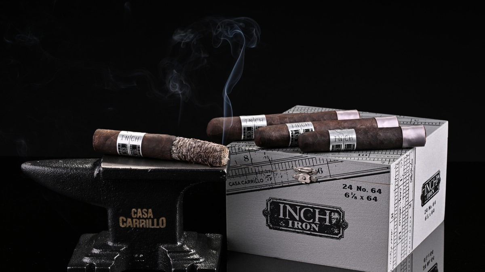

New Release · United States
Casa Carrillo Ships INCH Iron — Ernesto Pérez-Carrillo III's First Regular-Blend
Casa Carrillo has begun shipping "INCH Iron," the newest addition to the INCH line and the first regular-production blend from fourth-generation blender Ernesto Pérez-Carrillo III. The cigar uses a Pennsylvania broadleaf maduro wrapper, a Mexican San Andrés binder and Dominican and U.S. fillers; it is full-bodied and made in the Dominican Republic. It comes in three sizes, each in 24-count boxes: No.56 (5 x 56) at $10.75, No.60 (5 7/8 x 60) at $11.50 and No.64 (6 1/8 x 64) at $12.50. We reported the debut on November 14; this is the follow-up that shipping has begun.